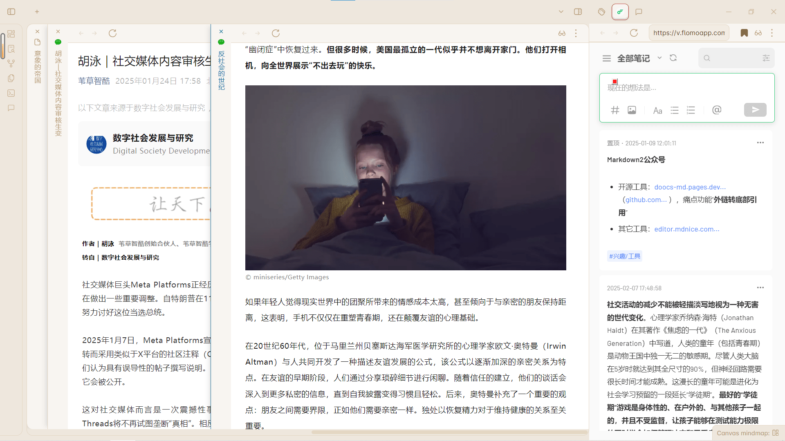

For instance, standing next to the hippo enclosure, hearing a song specifically written for the hippos.
👋 Foreword
If an artwork (or a product) suffers a drop in quality simply because it utilized AI, then apologies are indeed in order. However, when faced with something entirely new—something conjured from nothing—it’s hard to formulate a critique, even if the sense of incongruity is overwhelming.
I lack basic musical knowledge, and I rarely listen to music, yet even I can detect a certain strangeness.
For instance, standing next to the hippo enclosure, hearing a song specifically written for the hippos. Or, standing beside a decorative lantern shaped like the poet Li Qingzhao, hearing a female voice crooning soulfully, "Ah, Ru Meng Ling, Ru Meng Ling~"
Playing an existing song might require navigating copyright hurdles, so having an AI compose an original track is undeniably convenient. But to ensure a decent result, it might be wiser to first have an LLM with strong literary capabilities draft the lyrics, and then generate the song. Still, if they did that, I probably genuinely wouldn't be able to tell the difference. Which just goes to show that I really don't listen to much music.
I stumbled upon a paper stating that human experts who frequently use AI for writing demonstrate exceptional prowess at detecting AI-generated text; their accuracy is incredibly high, outperforming most automated detectors. This suggests that it’s not only the people looking to be lazy (or "boost efficiency") who need to use AI. The other faction—those striving to maintain the "purity" of creation and appreciation—must equally engage deeply with AI, as doing so equips you with the discernment to tell the difference.
🐎 The Paddock
🧑🤝🧑 Anthropomorphism
Our human ancestors enacted a fictional drama: they personified the forces governing fate, treating them as individuals with whom they could negotiate and barter. Miraculously, this strategy worked, because the future is, to a large extent, composed of other human beings—and often, this includes the very people who meticulously observe and evaluate the intricate details of your past behavior. This is not entirely dissimilar from a deity hovering above, scrutinizing and recording everything. Therefore, conceptualizing the future as a judgmental father figure is a highly constructive idea.
— Jordan Peterson, 12 Rules for Life
There is no sharp dividing line between "intelligence" and "computation." Things like cellular automata and weather systems are performing operations every bit as complex as our brains. But even if they are, in some sense, "thinking," they do not do so in a human manner, and they do not possess our context or our specific details.
— Stephen Wolfram, A New Kind of Science / Everything is Computation
When a young person uses an object, they might treat it purely as a tool. However, as they age, as their past life grows sufficiently rich and is fermented by the passage of time, familiar objects transform into ritual vessels, carrying massive loads of life signals. In short, we do not simply use an object to fulfill a function; we "commune" with objects.
...The elderly constantly say, "Don't throw these things away, we might need them later." This hints to me that objects with no future utility truly have nowhere left to go. For the elderly, whether an old object will actually be used in the future is irrelevant; what truly matters is viewing oneself as someone who still has a future.
— Wang Xiaowei, The Depths of the Everyday
🔐 The Encryption of Poetry
My realization at the time was this: a poem may perhaps be inexplicable, yet a good poem must offer an abundance of suggestions, making you feel that within the bewildering inexplicability before your eyes, there lies a hidden path toward understanding. A good poem seduces you into striving to find the explicable within the inexplicable. You enter the poem, and thus, the poem enters you.
— Yang Zhao, Poetic (诗的)
To see this clearly, you need only translate verses like Liu Yuxi’s "Beside the Vermilion Bird Bridge, wild grasses and flowers grow / At the entrance of Black Robe Lane, the setting sun slants low," and Li Bai’s "White hair three thousand stanzas long / Grown so long due to sorrow," into modern vernacular. For instance: "Wild grass and flowers have overgrown beside the Vermilion Bird Bridge, and the setting sun hangs slanted at Black Robe Lane" versus "My white hair is three thousand zhang long, it grew this long because of my worry."
It is not hard to see that once you strip away the formal poetic essence—meaning the meter and musicality of the verse—and rely solely on the content to generate poetry, Li Bai's verse still triumphs in modern vernacular, retaining its poetic nature. Liu Yuxi's verse, however, cannot withstand the destructive force of translation and is reduced to mere prosaic description. This illustrates that the objective imagery crafted by Liu Yuxi relies more heavily on the poem's external form than the subjective imagery crafted by Li Bai. In other words, the poetic quality derived from the content of objective imagery is weaker than that derived from subjective imagery. Thus, it is easy to observe that when a poem attempts to breach the wall of translated language, the poetic essence of objective imagery is easily filtered out. Most poetic elements cannot survive or establish themselves in a new language unless the translator recreates equivalent poetic essence to adapt to it. However, the subjective poetic core of subjective imagery generally survives miraculously by piercing the language wall through direct, literal translation.
— Huang Fan, The Empire of Imagery
For a poet, a pen name is not merely an act of concealment, nor is it simply a pretension to elegance; rather, it is a force symbolizing the emergence of a new self.
...In the moral philosophy of poetry, a poem possesses true meaning and value only when it manifests a light, flavor, and texture distinct from its author. If "the poem is exactly like the person," then having the "person" is enough—why bother with the "poem"? Yet T.S. Eliot understood better than anyone that, within secular morality, if a schism is discovered between "the poem and the person," society will merely accuse the poet of hypocrisy. Therefore, he simply went to every length to make the "person" vanish completely, leaving behind only the poem, leaving behind only the transcendent beauty, radiance, decadence, and anguish constructed and conveyed by the verses.
— Yang Zhao, Poetic (诗的)
If I read a book and it makes my whole body so cold no fire can warm me, I know that is poetry. If I feel physically as if the top of my head were taken off, I know that is poetry. These are the only way I know it. Is there any other way?
— Emily Dickinson
🌌 Illusions and Dreams

At night, when I sit alone on the living room sofa, I often plunge into extreme exhaustion. Eye fatigue is nothing; the most terrifying is auditory fatigue, which brings about bizarre auditory experiences. A person can be awakened from a dream by a certain sound, shattering the visual illusion, yet the sound itself is incredibly difficult to breach. When we see an image, we can verify whether it is real or an illusion simply by attempting to touch it; but an auditory hallucination is exceedingly hard to judge. We seem to exist within a prison of sound. My auditory fatigue induces a hallucination: there is always someone pressing against my ear, whispering something.
— Zhu Yue, Whispers (耳语)
To be, or not to be, that is the question: Whether 'tis nobler in the mind to suffer The slings and arrows of outrageous fortune, Or to take arms against a sea of troubles And by opposing end them. To die—to sleep, No more; and by a sleep to say we end The heart-ache and the thousand natural shocks That flesh is heir to: 'tis a consummation Devoutly to be wish'd. To die, to sleep; To sleep, perchance to dream—ay, there's the rub: For in that sleep of death what dreams may come, When we have shuffled off this mortal coil, Must give us pause.
— William Shakespeare, Hamlet
Freud believed that the function of dreams is to protect sleep. When a person falls asleep, ego vigilance relaxes, and repressed desires (often sexual) threaten to surge into consciousness and interrupt slumber. These wishes are permitted partial expression, cloaked in the disguise of a dream.
— Herant Katchadourian, Fundamentals of Human Sexuality
📰 The Newsstand
🚫 The Anti-Social Century
This can serve as an addendum to my previous blog post, The Way of Distance: Neural Network Hallucinations—
“The scary part, of course, is that learning how to interact with real, live human beings—who might disagree with you, who might disappoint you—is the whole trick to living in the world,” Epley says. I think he’s right. But Epley was born in the ’70s, and I was born in the ’80s. People born in the 2010s or 2020s might simply not agree with our premise about the irreplaceability of "real life" friends.
The Anti-Social Century
There's also another fascinating observation, though video platforms have never recommended the male version to me:
In previous months, I’d been captivated by a certain type of social media content: the viral "morning routine" video. If the protagonist is a man, he is typically handsome and wealthy. We watch him get out of bed; we see him meditate, journal, exercise, take supplements, and plunge into cold water. The most striking aspect of these videos is what they generally lack: other people.
The Anti-Social Century
💻 The Console
🔄 Obsidian Update
After updating Obsidian to V 1.8.4, a new core plugin called Web viewer was added, allowing you to use the note-taking app as a browser. This enables rather complex split-screen setups, perfect for scenarios like reading on one side and taking notes on the other.

Actually, the Arc browser used to be able to do this, but I always felt it carried a steep learning curve. Since I'm already accustomed to Obsidian, this newly added feature feels incredibly intuitive. For reading and writing workflows, I've managed to avoid opening a standalone browser as much as possible.
🎨 Icon Design
I added a feature to display a favicon for the blog, and as usual, the icon was designed by AI.
Since the icon is quite small, it's crucial to avoid cramming in too many elements and to emphasize the focal point during creation. For an initial-based logo, a simple prompt like this works:
Black and white abstract logo concept. A minimalist interpretation of the letter "J" using fluid bezier curves. Graphic design, clean and sophisticated.
Using the Recraft V2-Icon style directly is highly convenient, yielding a vector graphic with no background right off the bat. The downside is that the free tier only generates two variants at a time, making the variations rather limited. Using ImageFX provides significantly more variety, but requires some post-processing, like removing the background.
Once the icon file is ready, I used favicon.io to convert the formats. After generation, simply place all the files into the source/favicon_io directory:
- android-chrome-192x192.png
- android-chrome-512x512.png
- apple-touch-icon.png
- favicon-16x16.png
- favicon-32x32.png
- favicon.ico
- site.webmanifest